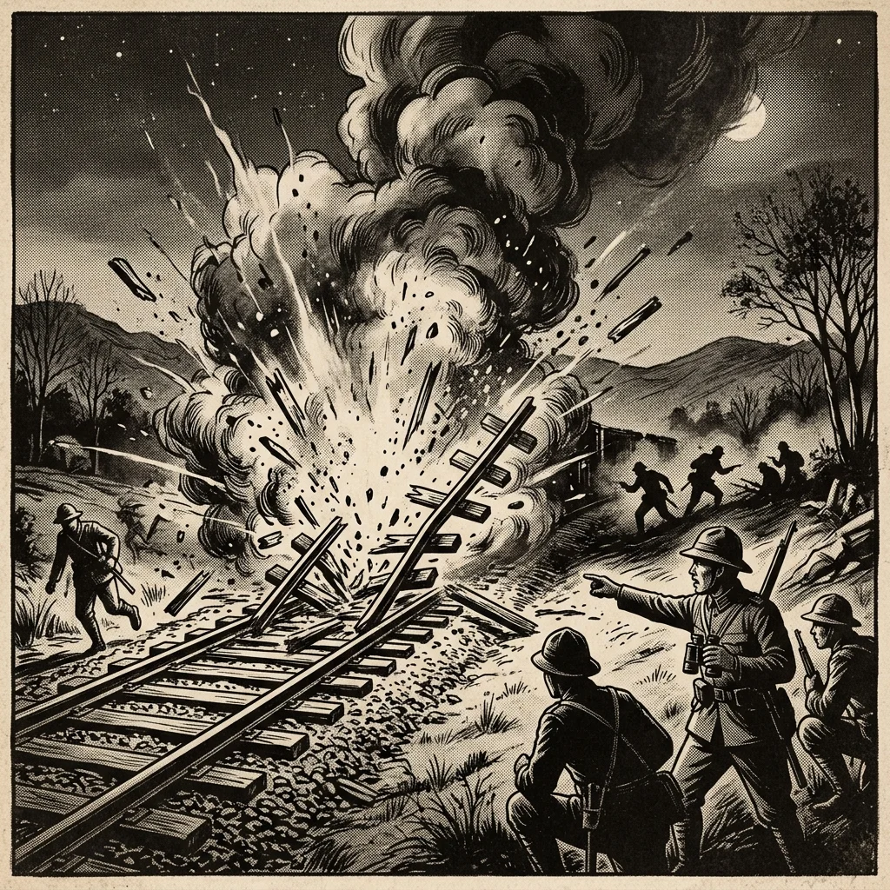

29. 世界恐�Eと軍部の台頭
大正チE��クラシーで日本が民主主義に向かぁE��、世界中をパニックに陥れた大恐�Eが発生しました。経済�E崩壊と人、E�E貧困は、日本を対外的な武力拡張へと駁E��立て、国冁E��は軍部が牙を�Eくことになります。今回は、世界恐�Eをめぐる吁E��の動きと、日本の運命を決定づけた「満州事変」、そして軍部が政治の実権を握ってぁE���E�つの暗殺事件を解説します！E/p>
1. 世界恐�E�E�せかいきょぁE��ぁE��と吁E��の対筁E/h2>
1929年、アメリカ・ニューヨークの株式市場�E�ウォール街）での大暴落を発端に、世界中の会社が倒産し、失業老E��溢れかえる大不況が起きました。これを世界恐�E�E�せかいきょぁE��ぁE��E/span>と呼びます、E/p>
日本もこの大あおりを受け、深刻な、E*昭和恐慁E*」が発生。多くの労働老E��街に溢れ、東北地方の農村では娘が身売りされたり、小学校に通う子どもがまともにお弁当を食べられなぁE��欠食�E童�E�ほどの極限状態に陥りました、E/p>
日本もブロチE��経済や飢饉への対抗策として、中国の東北部�E�満州）を力ずくで手に入れよぁE��しました、E/p>
満州に駐留してぁE��日本軍である**関東軁E*は、Espan class="marker-yellow">1931年 関東軍�E、渁E�E最後�E皁E��であった溥儀�E��Eぎ）をトップ（執政�E�に立てて、日本の傀儡�E�操り人形�E�国家である、E*満州国**」�E建国を勝手に宣言しました�E�E932年�E�、E/p>
 図1�E�関東軍�E謀略によって始まった「満州事変」における軍事侵攻のイメージ 中国の抗議を受けた国際連盟�E、調査団�E�リチE��ン調査団�E�を派遣。連盟�E日本の満州国建国を認めず、日本軍�E撤退を求める勧告案を採択しました、E/p>
これに反発した日本は、E933年に全権代表の松岡洋右�E�まつおかようすけ�E�E/span>らが会議場を退場し、Espan class="marker-yellow">国際連盟から�E脱退を表明しました。これにより、日本は世界の中で孤立した道を歩み始めました、E/p>
国冁E��は、恐慌による貧困めE��軍部の行動を抑え込もうとする政治家に対し、軍�E若手封E��たちが牙を�Eきました、E/p>
① 五�E一五事件 ➁E1932年5朁E5日 海軍�E青年封E��らが首相官邸を襲撁E��、満州国建国に慎重だっぁEspan class="marker-orange">犬養毁E��いぬかいつよし�E�首相を封E��しました、E/p>
※こ�E事件により、大正末期から続いてぁE��**「政党�E代表が首相になる政党政治」が完�Eに終わめE*を迎え、これ以降�E軍人が首相を務めるようになります、E/p>
② 二�E二�E事件 ➁E1936年2朁E6日 陸軍�E青年封E��たちが紁E400人の兵を率ぁE��東京の中忁E���E�首相官邸めE��が関�E�を占領し、E��橋是渁E��相ら�E政府要人を次、E��暗殺しました。この大反乱はのちに鎮圧されましたが、これ以降、軍部は「�E刁E��ちの意見を聞かなぁE��、またこのような事件が起きる」と政府を脁E��、発言力を急速に強めてぁE��ました、E/p>
図2�E�犬養毁E��相が青年封E��らに封E��された「五�E一五事件」�Eイメージ 🔥 こ�E単�EのチE��ト対策�E暗記�EコチE/p>
国吁E/th>
恐�E対策�E名称
対策�E具体的な冁E��
アメリカ
ニューチE��ール政筁E/span>
ルーズベルト大統領が実施。ダム建設などの大規模な公共事業で仕事を作り、失業老E��救済しました。また、労働老E�E保護を進めました、E/td>
イギリス・フランス
ブロチE��経渁E/span>
自国と庁E��な植民地を一つの「ブロチE���E�囲ぁE��」とし、ブロチE��外から�E輸入品に高い関税をかけて他国を締め�Eしました、E/td>
ドイチE�Eイタリア
ファシズム�E�独裁E��E/td>
植民地めE��E��が少なぁE��、E��は、ドイチE�EヒトラーめE��タリアのムチE��リーニとぁE��た独裁老E��台頭。軍事力で他国に侵入して領土を庁E��ようとしました、E/td>
2. 満州事変（まんしめE��じへん）と国際的孤竁E/h2>
① 満州事変！E931年�E�と「満州国」�E建国
② 国際連盟から�E脱退�E�E933年�E�E/h3>
3. 国冁E�E軍部の暴走と政党政治の終焉